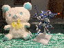
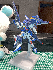
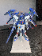
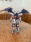
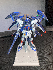
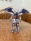
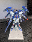
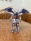
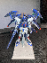
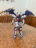

The Trailblazer posing next to Snow Flake Winter Rilakkuma 🩵💛🤍


 





The Trailblazer posing next to Snow Flake Winter Rilakkuma 🩵💛🤍


Stuff that happened in the past week, yo! First off, I built the IN ERA+ Trailblazer! It was quite good, though it's very fragile and impossible to pose! Look at da photos above!
I, uh, have had a pretty good week! I've been replaying Morrowind. It's phenomenal, in every way. I've been doing the Tribunal Cult, Great House Redoran, and Morag Tong faction quests this playthrough, and, uh. It's just really nice to be able to see Vvardenfell again! I started my playthrough by getting the Goldbrand, becoming a Quarra vampire, clearing out Ashalmawia to get Ebony armor, getting the Eltonbrand, getting the Spell Breaker, getting Marara's Ring, and then, uh, un-vampiring myself. Took a shitton of time, but having never done any Morrowind vampire stuff, it was an off-kilter and unique start to the playthrough. I can't wait to go on many more adventures alongside Amongus Nathan the Nord 🫡.
Creeper and then some doomer-ass level-up text (where I'm making sure to invest in Luck!). God, I love Morrowind 🥺💛🤎.
Now, today? Friday the 24th? I started by sauntering over to Rochester, MN, in order to see I Saw the TV Glow at Pop's Art Theater, a, uh, boutique single-screen strip mall theatre. I gotta say, their projector was extremely high-quality. Unbelievably crisp. Shoutouts to their projectionist!

Me and Koromaru about to Experience Kinology. On a couch! I was laying down! It was amazing!
I Saw the TV Glow was unbelievable. Jane Schoenbrun's best work, by far. I wasn't very interested with what We're All Going to the World's Fair did, but. God. I cried multiple times during the movie, and the hour after it ended I erupted into multiple crying fits. Just. Fuck! Fuck! It sorta subscribes to the theory of queer temporality - in that time, in the scale of a life, acts differently for queer people, in that they have entirely different milestones, and can face intense depersonalization and also usually mature into their own later in life. And. Fuck! Fuck! The movie opens with "if you don't think about it, it can't hurt you", or something like that, and ends with "there is still time". Just thinking about it now, I have shivers coming up my spine giving me goosebumps. Truly horrifying shit. The kind of movie which, if you give yourself to it, will give back in spades. I've not been this emotionally impacted by a movie since I last rewatched Annihilation. A great, potent work of trans cinema. I need to rewatch it and write an essay once it's out on home video, holy kamoly!
Anyways, uh, after I Saw the TV Glow, I went to Barnes and Noble! They had the Ambergris trilogy in one extremely-wide hardcover copy. Some might say it's "too wide", but I guess that's future me's problem, 'cuz I bought it!

In da parking lot, yo.
After that, I drove back to Austin and went to board game night (called "Meeple Center") at the local games shop. I played Codenames and, uh, a pseudo-catan-like that I can't remember the name of. It was real fun! During the pseudo-catan-like, someone made a joke that utilized the concept of a "gay bear", and my friend there had no idea what that was, so I explained to them very literally what it meant. They then remarked that that was a Magic card, and showed me Bearscapes Secret Lair, which was on sale. I remarked that "if it's more than 10 dollars, I won't buy it", and it just so happened to be exactly 10 bucks. I left it to a cointoss, and it was heads, so
I'm now the proud owner of The Gay Card. Shoutouts SPAM® Museum.
After all that, I went home and watched Taskmaster with Kip and, later, M@, and, uh, played some Morrowind. Then some Cobblemon. Full day, huh? In review I feel genuinely nasty for just using 5 commas in a row. Oh my god. Rereading these things is torturous! I'm not gonna edit that part because it feels comically in line with the Zug "ethos". Speaking of which, when I was playing Cobblemon it was with some friends, and jesus CHRIST. I was so bad at the game — so comically bad, and I wasn't even trying to be bad! — that it was almost intoxicating. I mean, I died to a fucking level 5 Weedle with my starter, I regularly fell in the void, I accidentally dropped items constantly — hell, I dropped a shitton of items to my friend